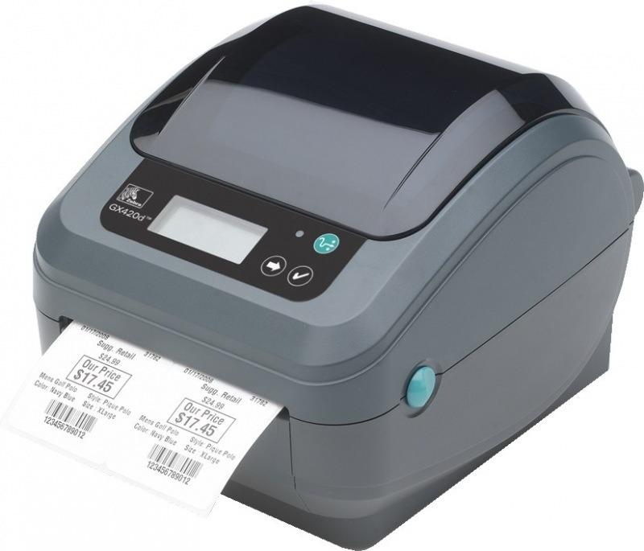

A hőnyomtató egy olyan típusú nyomtató, amely a hőenergiát használja a nyomtatási folyamat során. Itt van néhány kulcsfontosságú dolog a hőnyomtatókról:
1. Működési elv: A hőnyomtatók azért működnek, mert egy fűtött érintkezőfej vagy érzékelő fej közvetlen hő hatására kifejti a nyomtatásra szánt felületre. Általában egy hőérzékeny papírt vagy egyéb hőre reagáló anyagot használnak a nyomtatáshoz.
2. Alkalmazások: A hőnyomtatók gyakran használatosak nyugták, címkék, szalagok, matricák és egyéb kis méretű nyomtatott anyagok nyomtatására. Nagyon hatékonyak olyan helyzetekben, ahol csak fekete-fehér vagy egy szín használata elegendő.
3. Egyszerűség: A hőnyomtatók egyszerűek és megbízhatóak. Mivel kevesebb mozgó alkatrészt tartalmaznak, mint például a tintasugaras nyomtatók, kevésbé hajlamosak a meghibásodásra.
4. Költséghatékonyság: A hőnyomtatók gyakran kedvezőbb áron vásárolhatók meg, és az üzemeltetésük is olcsóbb lehet, mivel nem igényelnek drága tintapatronokat vagy festékeket.
5. Felhasznált anyagok: A hőnyomtatók általában hőérzékeny papírt vagy egyéb hőre reagáló anyagokat használnak a nyomtatáshoz. Ezek az anyagok gyakran környezetbarátak és könnyen elérhetőek.
Bár a hőnyomtatók általában egyszerűbb és kevésbé költséges megoldást jelentenek, fontos megjegyezni, hogy korlátozottak a nyomtatott színek és a felbontás terén. Ezért, ha színes vagy nagy felbontású nyomtatásra van szükség, más típusú nyomtatókat kell választani.
